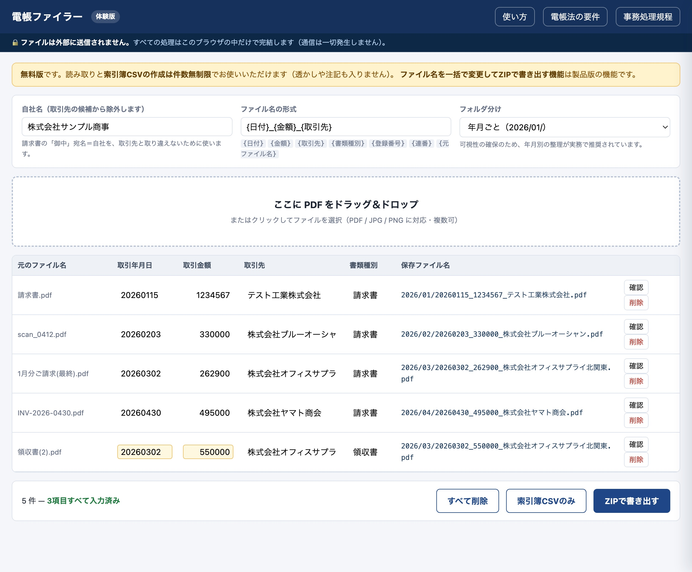
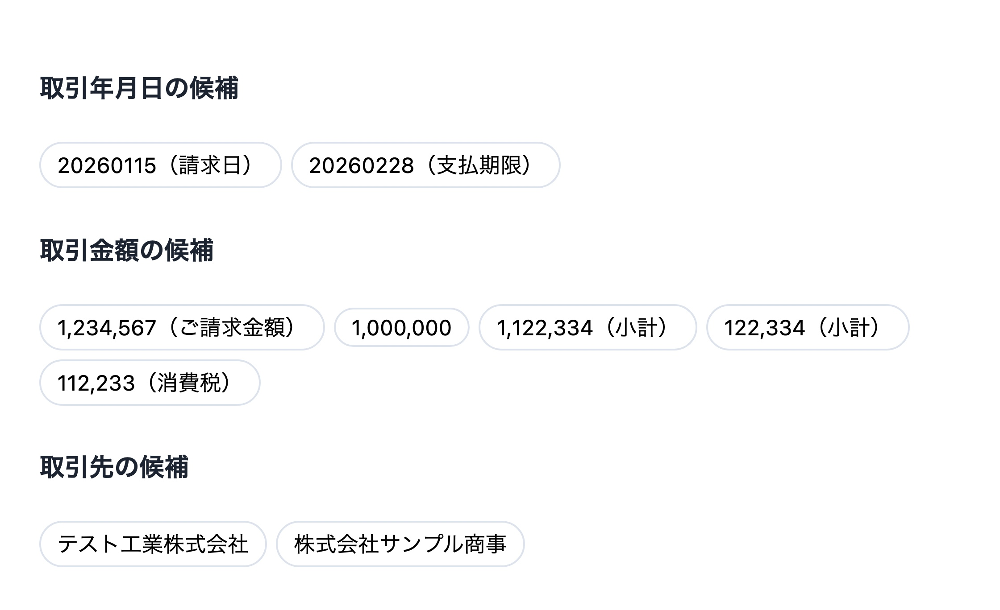

買い切り ／ インストール不要 ／ データを外に出さない
2024年1月から、メールやWebで受け取った請求書・領収書は電子のまま保存することが義務になりました。 保存するだけでは足りず、取引年月日・取引金額・取引先で検索できる状態にしておく必要があります。 電帳ファイラーは、PDFをまとめて放り込むだけでその状態を作ります。
実際の変換
リネームと同時に索引簿（CSV）を作ります。表計算ソフトで開けるので、 範囲指定検索にも、2項目以上の組合せ検索にも、そのまま対応できます。
現状
日本商工会議所 調査（2026年4月時点）
対応が進まない理由は、制度が難しいからではありません。 1件ずつファイル名を打ち直す作業が、単純に終わらないからです。 月100件を手作業でリネームすると、1件30秒としても年間10時間が消えます。
出典：国税庁「電子帳簿保存法一問一答【電子取引関係】」。判断に迷う場合は顧問税理士にご確認ください。
使い方

取引年月日・取引金額・取引先・書類種別・登録番号（インボイス番号）を自動で読み取ります。和暦、全角数字にも対応します。「支払期限」を取引日と取り違えたり、「小計」を合計と間違えたりしないよう作り込んでいます。
読み取れた項目でも確信度が低ければ黄色、読み取れなければ赤で表示します。「確認」を押すと元のPDFと、読み取り候補が根拠付きで並びます。候補をクリックするだけで直せます。

リネーム済みファイル（年月フォルダ付き）、索引簿CSV、訂正削除の防止に関する事務処理規程のひな形が、ひとまとめで手に入ります。展開して保存先に置くだけです。
設計思想
請求書には取引先名、金額、振込口座、担当者名が載っています。 本来、外に出したくない情報のはずです。
電帳ファイラーは、読み込んだファイルを一切送信しません。 すべての処理があなたのブラウザの中だけで完結します。 アップロードも、アカウント登録も、クラウド保存もありません。
確かめ方は簡単です。通信を切った状態で開いてください。まったく同じように動作します。 HTMLファイル1個なので、社内ITの許可も管理者権限も要りません。
比較
| クラウド会計・経費SaaS | NAS同梱ソフト | 電帳ファイラー | |
|---|---|---|---|
| 費用 | 月額が継続 | ハードウェア購入が前提 | 買い切り |
| 導入 | 会計ソフトの移行を伴うことが多い | 機器の設置と設定 | HTMLを開くだけ |
| 証憑データ | 事業者のサーバーへ送信 | 社内に保存 | ブラウザ内のみ・送信なし |
| 対応OS | ブラウザ | Windows中心 | Windows / macOS |
| 索引簿 | 製品により対応 | 製品により対応 | CSVで自動生成 |
| 事務処理規程 | 別途用意 | 別途用意 | ひな形を同梱 |
価格
お手元の請求書で試して、期待した働きをしなければ、購入から30日以内にご連絡ください。理由を問わず全額ご返金いたします。使用済みであっても構いません。
ご連絡は販売ページのお問い合わせから承ります。無名の売り手から9,800円を払う不安を、こちらで引き受けます。
よくあるご質問
30日以内であれば、理由を問わず全額ご返金します。ダウンロード済みでも構いません。無名の売り手から9,800円を払っていただくわけですから、そのリスクはこちらで負うのが筋だと考えています。販売ページのお問い合わせからご連絡ください。
されません。通信を切った状態でも同じように動作しますので、その場でご確認いただけます。ブラウザの開発者ツールでネットワーク通信を監視していただいても構いません。
いいえ。請求書の書式は発行元ごとに異なるため、自動判定が外れることはあります。だからこのツールは「全部お任せ」ではなく、自信のない箇所を色で示し、根拠付きの候補から選べる設計にしています。最終確認は人が行う前提です。
画像だけのPDFには文字情報が無いため、自動読み取りはできません。その場合は「文字情報なし」と表示されますので、手入力で補ってください。ファイル名の付与と索引簿の作成は同じように行えます。
本ツールが担うのは、検索要件を満たすファイル名の付与と索引簿の作成です。あわせて真実性の確保（事務処理規程の備付けなど）が必要で、そのひな形も同梱しています。ただし最終的な運用の可否は、顧問税理士または所轄税務署にご確認ください。
ありません。本ツールはファイルの整理だけを行います。今お使いの会計ソフトや保存先（社内サーバー、NAS、クラウドストレージ）はそのままで構いません。
変えられます。｛日付｝｛金額｝｛取引先｝｛書類種別｝｛登録番号｝｛連番｝｛元ファイル名｝を自由に組み合わせられます。年月フォルダ・取引先フォルダへの振り分けも選べます。